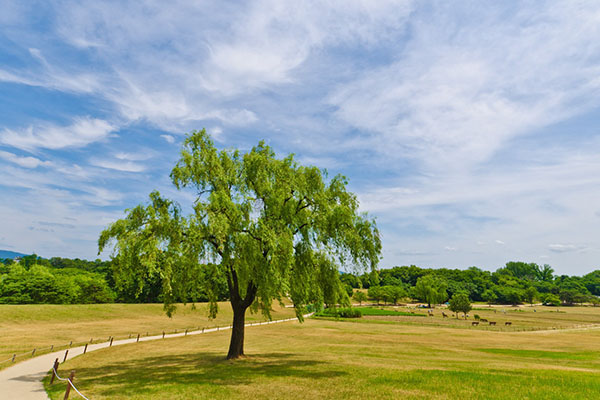

잔디시설안내

-
- 시민들과 함께 하는
올림픽공원 잔디시설 - 올림픽공원 잔디의 훼손을 예방하고 방문객들에게 보다 고품질의 잔디공간을 제공하기 위하여 잔디광장의 지역별 순환개방을 실시하고 있습니다.
- 올림픽공원은 피크닉장, 가족놀이동산, 나홀로나무, 88마당, 지구촌공원, 소마시술관 등을 개방함으로써 도심속의 자연을 만끽하실 수 있습니다.
- 시민들과 함께 하는
잔디마당 출입시 주의사항
-

- • 토성사면 미끄럼타기 및 개방지역내에서는 운동(공놀이, 자전거 타기, 롤러타기, 줄다리기 등)을 삼가해 주세요.
• 취사 및 음주, 사행성(도박)행위를 하지 맙시다.
잔디를 훼손하는 행위를 하지 맙시다.
그늘막, 텐트 설치 행위/ 인라인스케이트, 자전거 타는 행위/ 골프, 축구, 야구, 족구 등 운동
• 잔디밭에 애완동물은 출입할 수 없습니다. (배설물로 인한 선충류 감염 방지)
• 쓰레기는 반드시 되가져 갑시다.
출입금지 기간: 11.1~익년5.31